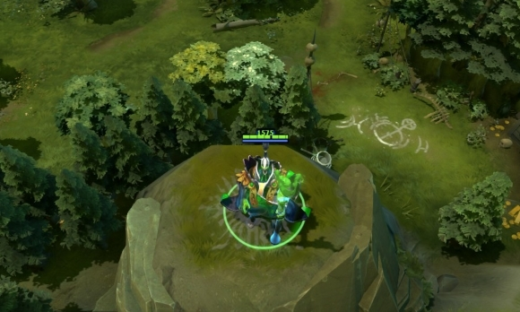

 拉比克
拉比克
背景故事
所有法师都会点魔法，其中一部分通过长时间的学习应该也能成为巫师，然而只有其中最有天赋的，才有资格成为魔导师。法师们都是一样，虽然相互认识，但却并不相互尊重。在整个魔法界，拉比克已经算是著名的斗士和学者，不过他自己也没想过自己是当魔导师的料，直到他第17次外出刺杀。他和往常一样将那些失败者从高台上抛下，轮到第12个人时，他猛然的发现自己的生命是如此的无趣。曾经很简单的短暂法术干扰或者空手召唤火焰都能让他兴奋不已，而现在对他来说已经是意料之中的事情。他渴求更大的挑战。于是，他戴上了战斗面具，做了每个试图超越的巫师都会做的事：扬言要杀死一名魔导师。拉比克很快就发现对一个魔导师宣战的后果就是对整个魔导师群体宣战，他们将愤怒倾泻在他身上。每个魔导师的咒语都是势不可挡的能量洪流，每次攻击都是精确的杀招。然而很快魔导师们就发现了一些诡异的事情：他们好像在被自己的法术攻击。魔法漩涡中隐约传来拉比克的轻笑，他隐秘的解读着魔导师们的法术，复制其中之一，然后用这个法术攻击另外一人，在魔导师之间制造着他精心编制的混乱。被背叛的愤怒开始在魔导师们中滋生，很快他们就开始相互攻击，因为他们也不确定究竟是谁攻击了自己。战斗终于停止，所有的魔导师都被他人的魔法灼烧，冻僵，甚至切成碎片，死伤惨重。拉比克则独自站在一旁，疲惫却欣喜，这次战斗让他获益颇丰。当他向隐修议会提出晋升的要求时，没有人敢置喙一句，议会中的幻寂十一长者一致同意，承认他为大魔导师。
隔空取物 目标滞空时，拉比克可以使用次级技能将目标扔往目标方向。 魔法消耗：120/120/12
冷却时间：22
|
弱化能流 魔法消耗：120/130/14
冷却时间：16.0/14.0/
|
失效力场 拉比克对奥术的精通能够保护友方单位免受弱小魔法的伤害，提升他们的魔法抗性。 与其他提高魔法抗性的物品和技能叠加。 魔法消耗：0
冷却时间：0
|
技能窃取 拉比克钻研一个敌方英雄的魔法精华之痕，学习这个英雄最后释放的技能的秘密。拉比克将可以使用这个技能，维持几分钟或直到他死亡。可用神杖升级。 无法窃取物品类技能。 魔法消耗：25/25/25
冷却时间：20.0/18.0/
|